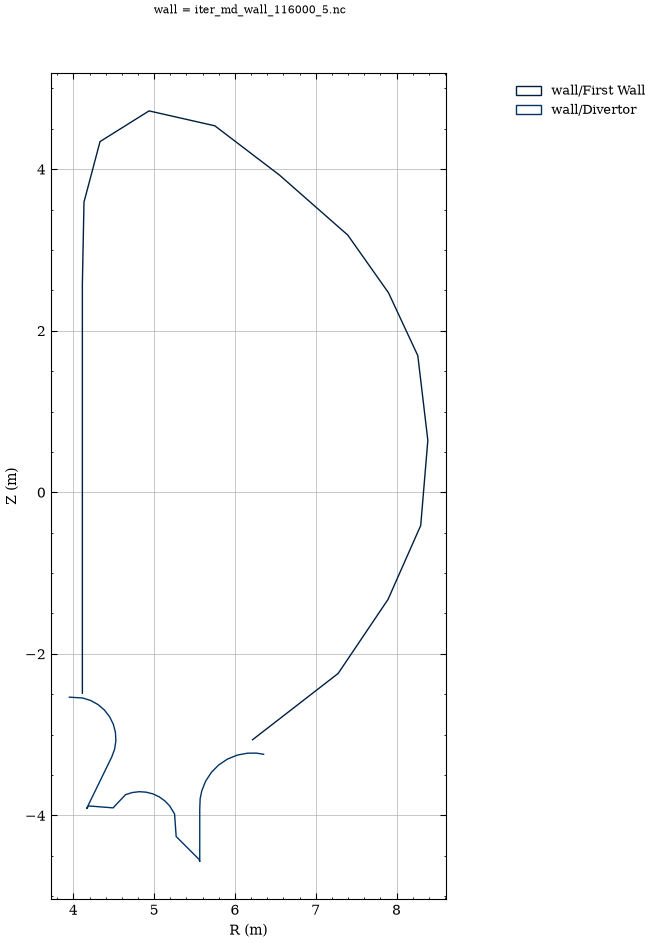
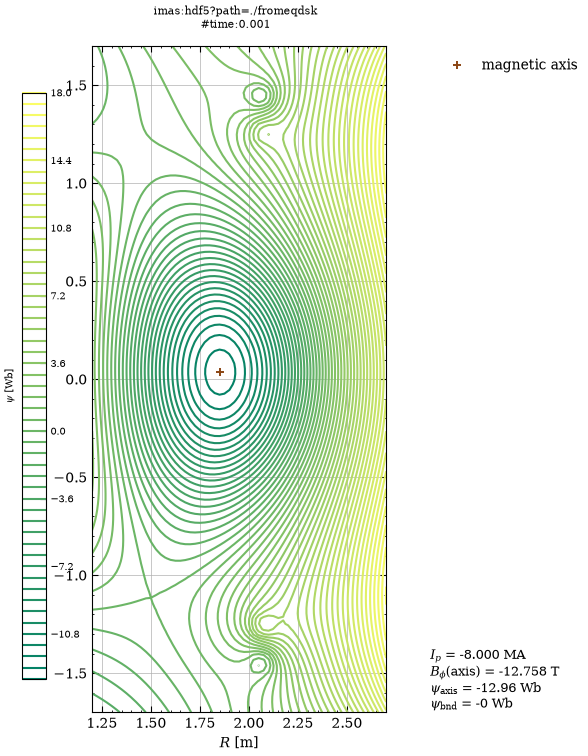
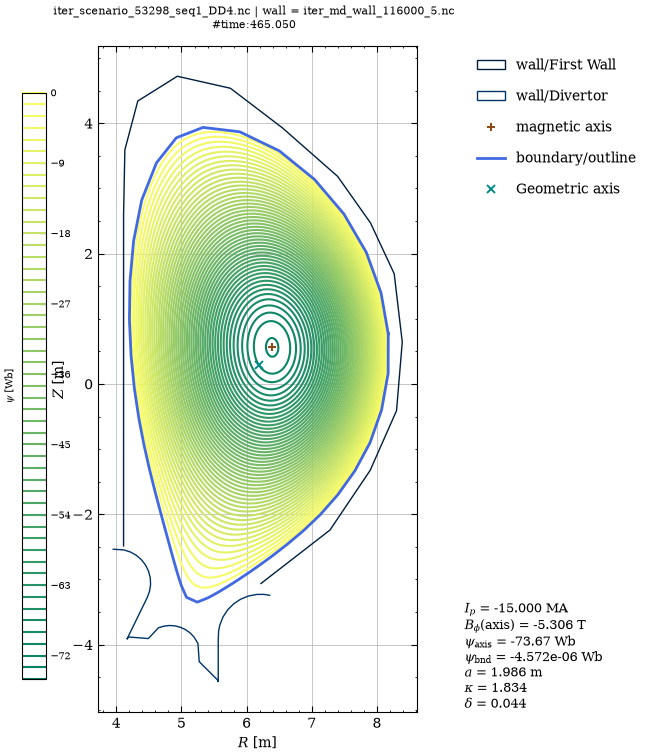

IDStools¶
IDStools is a toolbox with many little Python scripts to help your plot, explore and manipulate data entries and IDS data from the command line.
Concept¶
All the scripts inside this toolbox are relying on IMAS-Python to interact with IMAS IDS data and are typically contributed over years from a variety of users. The source code was reorganized to better isolate functionalities from the CLI scripts, so you can also import and reuse them in your own applications and not only via the command line.
Tools can be categorized in three categories:
analysis tools are focusing on plotting data coming from one or several IDSs;
IDS manipulation tools are focusing on exploration and simple operations on the IDS data;
database tools are there for historical reasons, can still be used but are mostly deprecated and to be replaced by SimDB.
Arguments of the scripts make extensive use of the IMAS URI syntax, including its fragment’s specification.
Install¶
# install the latest release of the package with pip
%pip install imas-idstools
# check version
import idstools
print(idstools.__version__)
Requirement already satisfied: imas-idstools in /opt/hostedtoolcache/Python/3.12.16/x64/lib/python3.12/site-packages (2.5.1)
Requirement already satisfied: cerberus in /opt/hostedtoolcache/Python/3.12.16/x64/lib/python3.12/site-packages (from imas-idstools) (1.3.8)
Requirement already satisfied: fortranformat in /opt/hostedtoolcache/Python/3.12.16/x64/lib/python3.12/site-packages (from imas-idstools) (2.0.3)
Requirement already satisfied: imas-python in /opt/hostedtoolcache/Python/3.12.16/x64/lib/python3.12/site-packages (from imas-idstools) (2.3.1)
Requirement already satisfied: matplotlib in /opt/hostedtoolcache/Python/3.12.16/x64/lib/python3.12/site-packages (from imas-idstools) (3.11.2)
Requirement already satisfied: netCDF4 in /opt/hostedtoolcache/Python/3.12.16/x64/lib/python3.12/site-packages (from imas-idstools) (1.7.5.1.post1)
Requirement already satisfied: numpy in /opt/hostedtoolcache/Python/3.12.16/x64/lib/python3.12/site-packages (from imas-idstools) (2.5.5)
Requirement already satisfied: packaging in /opt/hostedtoolcache/Python/3.12.16/x64/lib/python3.12/site-packages (from imas-idstools) (26.3)
Requirement already satisfied: pandas in /opt/hostedtoolcache/Python/3.12.16/x64/lib/python3.12/site-packages (from imas-idstools) (3.1.1)
Requirement already satisfied: plotext<6.0,>=5.0 in /opt/hostedtoolcache/Python/3.12.16/x64/lib/python3.12/site-packages (from imas-idstools) (5.3.2)
Requirement already satisfied: pyparsing in /opt/hostedtoolcache/Python/3.12.16/x64/lib/python3.12/site-packages (from imas-idstools) (3.3.3)
Requirement already satisfied: python-dateutil in /opt/hostedtoolcache/Python/3.12.16/x64/lib/python3.12/site-packages (from imas-idstools) (4.0.0)
Requirement already satisfied: pyyaml in /opt/hostedtoolcache/Python/3.12.16/x64/lib/python3.12/site-packages (from imas-idstools) (6.0.4)
Requirement already satisfied: rich in /opt/hostedtoolcache/Python/3.12.16/x64/lib/python3.12/site-packages (from imas-idstools) (15.0.0)
Requirement already satisfied: rich_argparse in /opt/hostedtoolcache/Python/3.12.16/x64/lib/python3.12/site-packages (from imas-idstools) (1.8.0)
Requirement already satisfied: six in /opt/hostedtoolcache/Python/3.12.16/x64/lib/python3.12/site-packages (from imas-idstools) (1.17.0)
Requirement already satisfied: tabulate in /opt/hostedtoolcache/Python/3.12.16/x64/lib/python3.12/site-packages (from imas-idstools) (0.10.0)
Requirement already satisfied: scipy in /opt/hostedtoolcache/Python/3.12.16/x64/lib/python3.12/site-packages (from imas-python->imas-idstools) (1.18.1)
Requirement already satisfied: click in /opt/hostedtoolcache/Python/3.12.16/x64/lib/python3.12/site-packages (from imas-python->imas-idstools) (8.5.1)
Requirement already satisfied: xxhash>=2 in /opt/hostedtoolcache/Python/3.12.16/x64/lib/python3.12/site-packages (from imas-python->imas-idstools) (4.1.0)
Requirement already satisfied: imas_data_dictionaries in /opt/hostedtoolcache/Python/3.12.16/x64/lib/python3.12/site-packages (from imas-python->imas-idstools) (4.1.1)
Requirement already satisfied: imas_core in /opt/hostedtoolcache/Python/3.12.16/x64/lib/python3.12/site-packages (from imas-python->imas-idstools) (5.7.3)
Requirement already satisfied: contourpy>=1.0.1 in /opt/hostedtoolcache/Python/3.12.16/x64/lib/python3.12/site-packages (from matplotlib->imas-idstools) (1.4.0)
Requirement already satisfied: cycler>=0.10 in /opt/hostedtoolcache/Python/3.12.16/x64/lib/python3.12/site-packages (from matplotlib->imas-idstools) (0.12.1)
Requirement already satisfied: fonttools>=4.28.2 in /opt/hostedtoolcache/Python/3.12.16/x64/lib/python3.12/site-packages (from matplotlib->imas-idstools) (4.68.0)
Requirement already satisfied: kiwisolver>=1.3.1 in /opt/hostedtoolcache/Python/3.12.16/x64/lib/python3.12/site-packages (from matplotlib->imas-idstools) (1.5.1)
Requirement already satisfied: pillow>=9 in /opt/hostedtoolcache/Python/3.12.16/x64/lib/python3.12/site-packages (from matplotlib->imas-idstools) (13.0.0)
Requirement already satisfied: tzdata in /opt/hostedtoolcache/Python/3.12.16/x64/lib/python3.12/site-packages (from python-dateutil->imas-idstools) (2026.6)
Requirement already satisfied: cftime in /opt/hostedtoolcache/Python/3.12.16/x64/lib/python3.12/site-packages (from netCDF4->imas-idstools) (1.6.6.1)
Requirement already satisfied: certifi in /opt/hostedtoolcache/Python/3.12.16/x64/lib/python3.12/site-packages (from netCDF4->imas-idstools) (2026.11.20)
Requirement already satisfied: markdown-it-py>=2.2.0 in /opt/hostedtoolcache/Python/3.12.16/x64/lib/python3.12/site-packages (from rich->imas-idstools) (4.3.0)
Requirement already satisfied: pygments<3.0.0,>=2.13.0 in /opt/hostedtoolcache/Python/3.12.16/x64/lib/python3.12/site-packages (from rich->imas-idstools) (2.21.0)
Requirement already satisfied: mdurl~=0.1 in /opt/hostedtoolcache/Python/3.12.16/x64/lib/python3.12/site-packages (from markdown-it-py>=2.2.0->rich->imas-idstools) (0.1.2)
Note: you may need to restart the kernel to use updated packages.
2.5.1
# this cell has some tricks that may be relevant only for running in notebooks
#import os
#import sysconfig
#scripts_path = sysconfig.get_path('scripts')
#os.environ["PATH"] += scripts_path
try: # interactive widgets in Google Colab; not needed elsewhere
from google.colab import output
output.enable_custom_widget_manager()
except ImportError:
pass
%matplotlib inline
Download IDS data from Zenodo¶
A few IMAS IDS data entries are available open access in Zenodo in the open-imas community:
examples of ITER simulations
examples of ITER machine description
# download nc file with IDS data for a scenario
!wget https://zenodo.org/records/17062700/files/iter_scenario_53298_seq1_DD4.nc
# download nc file with IDS for machine description
!wget https://zenodo.org/records/17113713/files/iter_md_wall_116000_5.nc
--2026-11-23 14:30:51-- https://zenodo.org/records/17062700/files/iter_scenario_53298_seq1_DD4.nc
Resolving zenodo.org (zenodo.org)... 188.185.47.192, 188.185.51.60, 188.185.42.113, ...
Connecting to zenodo.org (zenodo.org)|188.185.47.192|:443...
connected.
HTTP request sent, awaiting response...
200 OK
Length: 14304470 (14M) [application/octet-stream]
Saving to: ‘iter_scenario_53298_seq1_DD4.nc’
iter_scen 0%[ ] 0 --.-KB/s
iter_scena 0%[ ] 56.66K 248KB/s
iter_scenar 1%[ ] 268.61K 506KB/s
iter_scenari 4%[ ] 571.36K 690KB/s
iter_scenario 6%[> ] 842.80K 751KB/s
iter_scenario_ 8%[> ] 1.20M 865KB/s
iter_scenario_5 11%[=> ] 1.62M 967KB/s
iter_scenario_53 15%[==> ] 2.05M 1.02MB/s
iter_scenario_532 19%[==> ] 2.66M 1.15MB/s
iter_scenario_5329 21%[===> ] 2.96M 1.14MB/s
iter_scenario_53298 24%[===> ] 3.31M 1.14MB/s
ter_scenario_53298_ 25%[====> ] 3.48M 1.12MB/s eta 9s
er_scenario_53298_s 27%[====> ] 3.78M 1.11MB/s eta 9s
r_scenario_53298_se 31%[=====> ] 4.27M 1.16MB/s eta 9s
_scenario_53298_seq 34%[=====> ] 4.70M 1.18MB/s eta 9s
scenario_53298_seq1 37%[======> ] 5.08M 1.23MB/s eta 7s
cenario_53298_seq1_ 39%[======> ] 5.33M 1.26MB/s eta 7s
enario_53298_seq1_D 41%[=======> ] 5.66M 1.26MB/s eta 7s
nario_53298_seq1_DD 43%[=======> ] 5.93M 1.25MB/s eta 7s
ario_53298_seq1_DD4 47%[========> ] 6.43M 1.29MB/s eta 6s
rio_53298_seq1_DD4. 50%[=========> ] 6.82M 1.29MB/s eta 6s
io_53298_seq1_DD4.n 52%[=========> ] 7.17M 1.29MB/s eta 6s
o_53298_seq1_DD4.nc 54%[=========> ] 7.43M 1.21MB/s eta 6s
_53298_seq1_DD4.nc 57%[==========> ] 7.79M 1.22MB/s eta 5s
53298_seq1_DD4.nc 59%[==========> ] 8.09M 1.20MB/s eta 5s
3298_seq1_DD4.nc 61%[===========> ] 8.43M 1.24MB/s eta 5s
298_seq1_DD4.nc 64%[===========> ] 8.79M 1.26MB/s eta 5s
98_seq1_DD4.nc 67%[============> ] 9.16M 1.24MB/s eta 4s
8_seq1_DD4.nc 70%[=============> ] 9.57M 1.23MB/s eta 4s
_seq1_DD4.nc 73%[=============> ] 10.02M 1.25MB/s eta 4s
seq1_DD4.nc 75%[==============> ] 10.26M 1.25MB/s eta 4s
eq1_DD4.nc 76%[==============> ] 10.48M 1.25MB/s eta 3s
q1_DD4.nc 80%[===============> ] 10.98M 1.30MB/s eta 3s
1_DD4.nc 83%[===============> ] 11.40M 1.33MB/s eta 3s
_DD4.nc 86%[================> ] 11.85M 1.32MB/s eta 3s
DD4.nc 89%[================> ] 12.18M 1.31MB/s eta 1s
D4.nc 91%[=================> ] 12.51M 1.31MB/s eta 1s
4.nc 94%[=================> ] 12.84M 1.29MB/s eta 1s
.nc 97%[==================> ] 13.30M 1.33MB/s eta 1s
iter_scenario_53298 100%[===================>] 13.64M 1.36MB/s in 11s
2026-11-23 14:31:02 (1.24 MB/s) - ‘iter_scenario_53298_seq1_DD4.nc’ saved [14304470/14304470]
--2026-11-23 14:31:02-- https://zenodo.org/records/17113713/files/iter_md_wall_116000_5.nc
Resolving zenodo.org (zenodo.org)...
137.138.121.78, 188.185.40.132, 188.185.42.113, ...
Connecting to zenodo.org (zenodo.org)|137.138.121.78|:443...
connected.
HTTP request sent, awaiting response...
200 OK
Length: 79948 (78K) [application/octet-stream]
Saving to: ‘iter_md_wall_116000_5.nc’
iter_md_wall_116000 0%[ ] 0 --.-KB/s
iter_md_wall_116000 100%[===================>] 78.07K 395KB/s in 0.2s
2026-11-23 14:31:03 (395 KB/s) - ‘iter_md_wall_116000_5.nc’ saved [79948/79948]
Explore and manipulate scripts¶
idslist to list IDSs and times present in a data entry¶
%idslist -u iter_scenario_53298_seq1_DD4.nc
14:31:04 INFO Parsing data dictionary version 4.1.1 @dd_zip.py:89
14:31:04 INFO Parsing data dictionary version 4.0.0 @dd_zip.py:89
List of IDSes ┏━━━━━━━━━━━━━━━━┳━━━━━━━━┳━━━━━━━━━━━━━━━━━┓ ┃ IDS ┃ SLICES ┃ TIME ┃ ┡━━━━━━━━━━━━━━━━╇━━━━━━━━╇━━━━━━━━━━━━━━━━━┩ │ core_profiles │ 1 │ array([465.05]) │ │ core_sources │ 1 │ array([465.05]) │ │ core_transport │ 1 │ array([465.05]) │ │ edge_profiles │ 1 │ array([465.05]) │ │ edge_sources │ 1 │ array([465.05]) │ │ edge_transport │ 1 │ array([465.05]) │ │ equilibrium │ 1 │ array([465.05]) │ │ ntms │ 1 │ array([0.]) │ │ summary │ 1 │ array([465.05]) │ └────────────────┴────────┴─────────────────┘
idsprint to print the content of an IDS¶
%idsprint -u iter_scenario_53298_seq1_DD4.nc#summary/global_quantities
╭─────────────────────────────────────────────────────────────────────────────────────────────────────────────────╮ │ global_quantities │ │ ├── global_quantities/ip │ │ │ └── value: array([-15000000.]) │ │ ├── global_quantities/current_non_inductive │ │ │ └── value: array([-4759582.3392]) │ │ ├── global_quantities/current_bootstrap │ │ │ └── value: array([-3574423.8625]) │ │ ├── global_quantities/current_ohm │ │ │ └── value: array([-10240417.6608]) │ │ ├── global_quantities/v_loop │ │ │ └── value: array([-0.0641]) │ │ ├── global_quantities/li_3 │ │ │ └── value: array([0.6753]) │ │ ├── global_quantities/beta_tor │ │ │ └── value: array([0.0276]) │ │ ├── global_quantities/beta_tor_norm │ │ │ └── value: array([1.9387]) │ │ ├── global_quantities/beta_pol │ │ │ └── value: array([0.8374]) │ │ ├── global_quantities/energy_diamagnetic │ │ │ └── value: array([3.4919e+08]) │ │ ├── global_quantities/energy_total │ │ │ └── value: array([3.4919e+08]) │ │ ├── global_quantities/energy_thermal │ │ │ └── value: array([3.4022e+08]) │ │ ├── global_quantities/energy_b_field_pol │ │ │ └── value: array([2.9532e+08]) │ │ ├── global_quantities/h_mode │ │ │ └── value: array([1], dtype=int32) │ │ ├── global_quantities/r0 │ │ │ └── value: 6.2 │ │ ├── global_quantities/b0 │ │ │ └── value: array([-5.3]) │ │ ├── global_quantities/h_98 │ │ │ └── value: array([1.0068]) │ │ └── global_quantities/tau_energy │ │ └── value: array([2.999]) │ ╰─────────────────────────────────────────────────────────────────────────────────────────────────────────────────╯
eqdsk2ids to convert a geqdsk file to IDS¶
# let's download an open access geqdsk file, courtesy of SPARCPublic
!wget https://raw.githubusercontent.com/cfs-energy/SPARCPublic/refs/heads/main/EQlibrary/sparc_1358.EQDSK_PsiOver2pi_negIp_negBt_negFpol -O sparc.EQDSK
# here we need to specify the input COCOS for the eqdsk file (FreeGS uses 3 or 7), while the output is fixed by IMAS DD
%eqdsk2ids -g sparc.EQDSK -d imas:hdf5?path=./fromeqdsk -c 3
--2026-11-23 14:31:05-- https://raw.githubusercontent.com/cfs-energy/SPARCPublic/refs/heads/main/EQlibrary/sparc_1358.EQDSK_PsiOver2pi_negIp_negBt_negFpol
Resolving raw.githubusercontent.com (raw.githubusercontent.com)... 185.199.109.133, 185.199.110.133, 185.199.111.133, ...
Connecting to raw.githubusercontent.com (raw.githubusercontent.com)|185.199.109.133|:443... connected.
HTTP request sent, awaiting response...
200 OK
Length: 137217 (134K) [text/plain]
Saving to: ‘sparc.EQDSK’
sparc.EQDSK 100%[===================>] 134.00K --.-KB/s in 0.003s
2026-11-23 14:31:06 (45.0 MB/s) - ‘sparc.EQDSK’ saved [137217/137217]
26/11/23 14:31:06 WARNING: irregular length of header: 50
Plotting scripts¶
plotmachinedescription¶
# this script has rules to plot geometry from the wall, pf_active, pf_passive and magnetics IDSs
%plotmachinedescription -u iter_md_wall_116000_5.nc
[11/23/26 14:31:06] INFO Could not find tf in the given data entry machinedescription.py:394
[11/23/26 14:31:06] INFO Could not find tf in the given data entry machinedescription.py:394
[11/23/26 14:31:06] INFO Could not find tf in the given data entry machinedescription.py:394
INFO Could not find pf_passive in the given data entry machinedescription.py:394
INFO Could not find pf_passive in the given data entry machinedescription.py:394
INFO Could not find pf_passive in the given data entry machinedescription.py:394
INFO Could not find pf_active in the given data entry machinedescription.py:394
INFO Could not find pf_active in the given data entry machinedescription.py:394
INFO Could not find pf_active in the given data entry machinedescription.py:394
INFO Could not find magnetics in the given data entry machinedescription.py:394
INFO Could not find magnetics in the given data entry machinedescription.py:394
INFO Could not find magnetics in the given data entry machinedescription.py:394

plotequilibrium¶
# let's first check our eqdsk converted equilibrium from SPARC
%plotequilibrium -u imas:hdf5?path=./fromeqdsk
INFO equilibrium: time = 0.001 s, index = 0 idshelper.py:123
INFO equilibrium: time = 0.001 s, index = 0 idshelper.py:123
INFO equilibrium: time = 0.001 s, index = 0 idshelper.py:123
[11/23/26 14:31:06] INFO equilibrium: time = 0.001 s, index = 0 idshelper.py:123
INFO Using equilibrium.time_slice[0].profiles_2d[0].grid.dim1/dim2 for equilibrium.py:88 the 2D grid
INFO Using equilibrium.time_slice[0].profiles_2d[0].grid.dim1/dim2 for equilibrium.py:88 the 2D grid
INFO Using equilibrium.time_slice[0].profiles_2d[0].grid.dim1/dim2 for equilibrium.py:88 the 2D grid
INFO Using equilibrium.time_slice[0].profiles_2d[0].grid.dim1/dim2 for equilibrium.py:88 the 2D grid

# we can also check the ITER scenario equilibrium we downloaded from Zenodo and combine it with machine description
%plotequilibrium -u iter_scenario_53298_seq1_DD4.nc --md iter_md_wall_116000_5.nc
[11/23/26 14:31:07] INFO equilibrium: time = 465.050 s, index = 0 idshelper.py:123
[11/23/26 14:31:07] INFO equilibrium: time = 465.050 s, index = 0 idshelper.py:123
[11/23/26 14:31:07] INFO equilibrium: time = 465.050 s, index = 0 idshelper.py:123
[11/23/26 14:31:07] INFO equilibrium: time = 465.050 s, index = 0 idshelper.py:123
[11/23/26 14:31:07] INFO equilibrium: time = 465.050 s, index = 0 idshelper.py:123
INFO Using equilibrium.time_slice[0].profiles_2d[0].grid.dim1/dim2 for equilibrium.py:88 the 2D grid
INFO Using equilibrium.time_slice[0].profiles_2d[0].grid.dim1/dim2 for equilibrium.py:88 the 2D grid
INFO Using equilibrium.time_slice[0].profiles_2d[0].grid.dim1/dim2 for equilibrium.py:88 the 2D grid
INFO Using equilibrium.time_slice[0].profiles_2d[0].grid.dim1/dim2 for equilibrium.py:88 the 2D grid
INFO Using equilibrium.time_slice[0].profiles_2d[0].grid.dim1/dim2 for equilibrium.py:88 the 2D grid
INFO Could not find tf in the given data entry machinedescription.py:394
INFO Could not find tf in the given data entry machinedescription.py:394
INFO Could not find tf in the given data entry machinedescription.py:394
INFO Could not find tf in the given data entry machinedescription.py:394
INFO Could not find tf in the given data entry machinedescription.py:394
INFO Could not find pf_passive in the given data entry machinedescription.py:394
INFO Could not find pf_passive in the given data entry machinedescription.py:394
INFO Could not find pf_passive in the given data entry machinedescription.py:394
INFO Could not find pf_passive in the given data entry machinedescription.py:394
INFO Could not find pf_passive in the given data entry machinedescription.py:394
INFO Could not find pf_active in the given data entry machinedescription.py:394
INFO Could not find pf_active in the given data entry machinedescription.py:394
INFO Could not find pf_active in the given data entry machinedescription.py:394
INFO Could not find pf_active in the given data entry machinedescription.py:394
INFO Could not find pf_active in the given data entry machinedescription.py:394
INFO Could not find magnetics in the given data entry machinedescription.py:394
INFO Could not find magnetics in the given data entry machinedescription.py:394
INFO Could not find magnetics in the given data entry machinedescription.py:394
INFO Could not find magnetics in the given data entry machinedescription.py:394
INFO Could not find magnetics in the given data entry machinedescription.py:394
